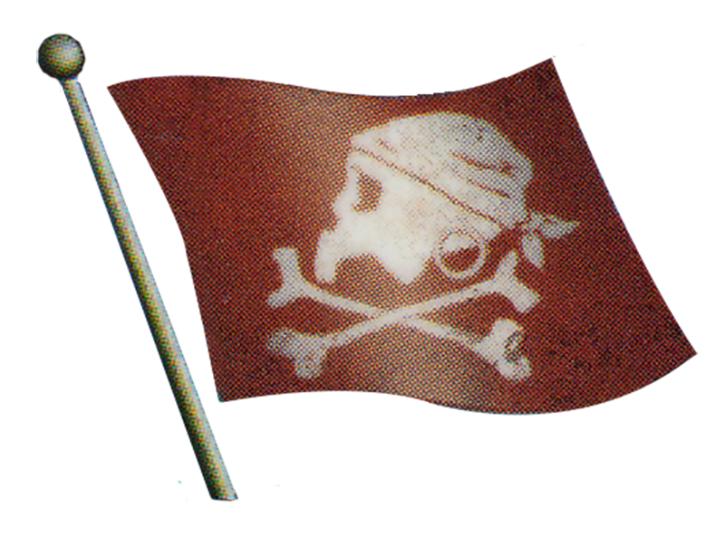
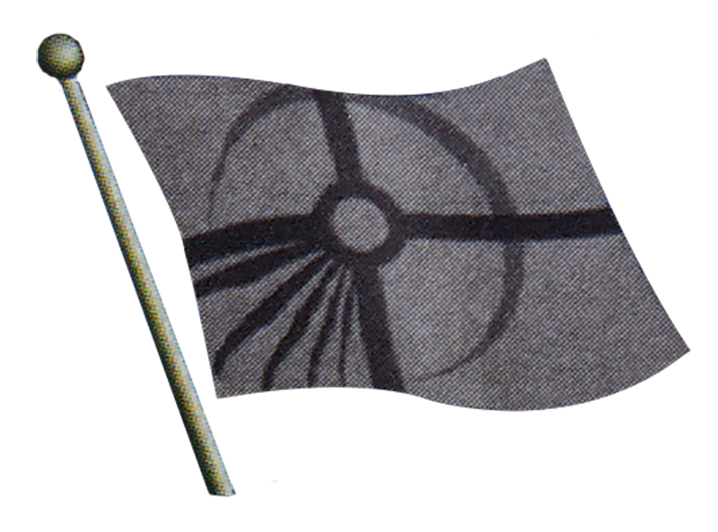
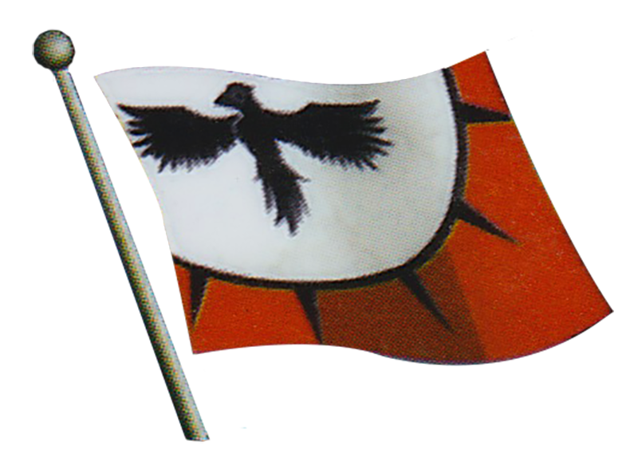

Big thanks to pirateswithben.com for much of this information.
If you want to link a search to someone else, just add "?s=" and the text you want to search.
Example: https://tilorfire27.github.io/PiratesCSGDB/index.html?s=DJC-001
Points Min: 0 Points Max: 35
Masts Min: 0 Masts Max: 10
Cargo Min: 0 Cargo Max: 10
Base Speed: None S L S+S S+L S+S+S L+L D T
Faction:
 American
American Barbary Corsair
Barbary CorsairCursed
 English
English French
French Jade Rebellion
Jade RebellionMercenary
 Pirate
Pirate Spanish
SpanishViking
Unique Treasure
Neutral
All
Shareable link: https://tilorfire27.github.io/PiratesCSGDB/index.html?s=BC-088

 5
5  4
4  L
L